Harmonização Orofacial
Bichectomia, Toxina Botulínica, Lipo de Papada, Fios de Sustentação, Preenchimento Facial e Labial.
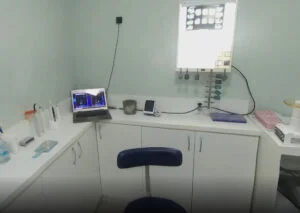
Com 35 anos de experiência e mais de 13.000 clientes atendidos, oferecemos cuidados dentários de alta qualidade em uma estrutura de luxo.
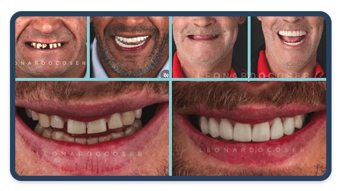
Na clínica Odonto Coser, acreditamos na transformação completa do seu sorriso.
Oferecemos tratamentos personalizados, utilizando tecnologias avançadas e equipamentos de ponta para garantir a sua saúde e também a beleza do seu sorriso.
Buscamos compreender as necessidades individuais de cada paciente, oferecemos tratamentos individualizados para resolver as suas dores específicas.
Aqui nosso resultado é duradouro, transformamos o seu sorriso e a sua face, mantendo a sua essência e naturalidade.
Nossa clínica conta com especialistas que atuam em diversas áreas. Seja para harmonizar, embelezar, ou tirar seu mal estar, a Odonto Coser está de portas abertas, sempre pronta para te receber.
Bichectomia, Toxina Botulínica, Lipo de Papada, Fios de Sustentação, Preenchimento Facial e Labial.
Camadas ultrafinas de porcelana ou resina para recobrir manchas, harmonizar o sorriso e fechar diastemas.
Chega de sofrer com a perda de dentes! Os implantes são a melhor ferramenta para repor dentes, unindo estética e funcionalidade.
Responsável pela correção da posição dos ossos maxilares e dos dentes posicionados de maneira incorreta.
Trabalhamos com todos os tipos de clareamento: De Consultório (Laser), Caseiro e misto.
Indicado quando o dente sofre algum trauma: cáries profundas, fraturas, inflamação e infecção da polpa.
Placas transparentes, estéticas e removíveis que corrigem os dentes dispensando os aparelhos tradicionais.
Técnicas modernas utilizadas para ganho em espessura ou altura óssea. Indicado para pacientes com deficiência óssea.
Condição que afeta as articulações da boca e os músculos da mandíbula. A DTM é conhecida como dor orofacial.
Especialidade que cuida da saúde bucal de crianças, desde o nascimento até a adolescência.
Prótese Total, Parcial Removível, Fixa sobre dente, Fixa sobre implantes e Provisórias.
Prevenção de complicações gengivais e ósseas. Odontologia restauradora focada na estética e função.
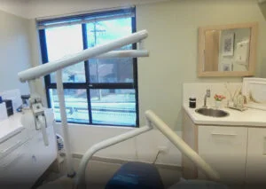
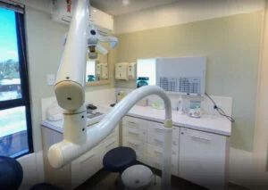
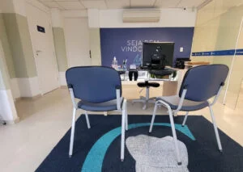
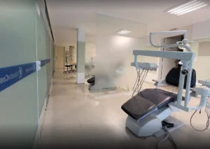
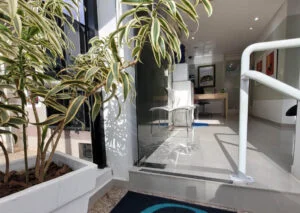
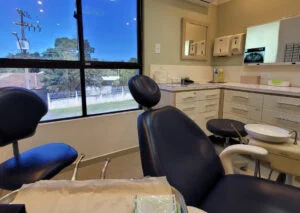
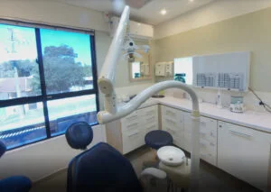
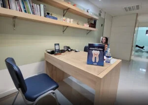
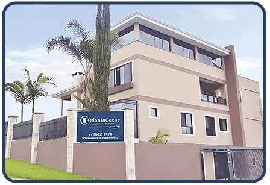
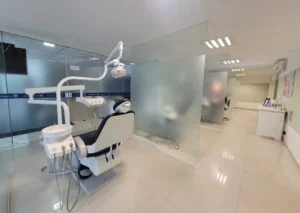
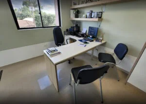
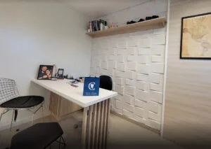
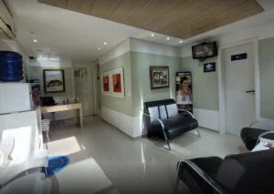
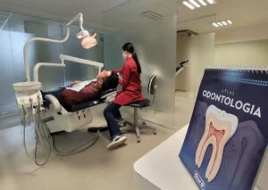
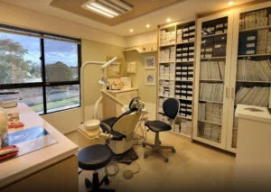
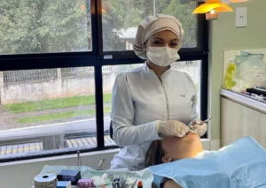
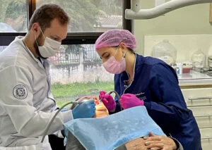
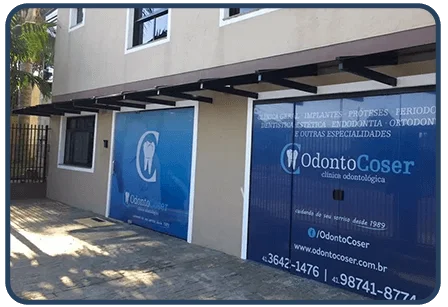
Localizada no centro de Araucária, a Clínica Odonto Coser cuida do seu sorriso e da sua saúde desde 1989. Contamos com uma equipe familiar formada por profissionais altamente qualificados, totalmente dedicados ao seu bem-estar.
Nossa estrutura é altamente tecnológica: possuímos um centro cirúrgico para grandes intervenções, raio-x digital, sala com estúdio fotográfico de ponta e mais de 07 cadeiras odontológicas. Além disso, dispomos de uma equipe médica especializada em sedação geral, proporcionando o máximo de conforto nas cirurgias de grande porte.
.webp) Conhecer a Clínica
Conhecer a Clínica
É muito gratificante para nós saber que, com o nosso trabalho, mudamos não só sorrisos, mas vidas inteiras!
"Excelente atendimento! A equipe é muito profissional e atenciosa. Meu sorriso ficou incrível após o tratamento com implantes. Recomendo a todos!"
"Clínica de referência em Araucária. Fiz clareamento dental e o resultado superou minhas expectativas. Ambiente moderno e equipe muito qualificada."
"Levei meu filho para odontopediatria e foi uma experiência maravilhosa. A Dra. foi super paciente e carinhosa. Clínica completa e bem estruturada."
"Fiz harmonização orofacial e ficou natural, exatamente como eu queria. Dr. Leonardo Coser é um profissional excepcional. Nota 10!"
Consulte nossas condições via WhatsApp, ou agendando uma avaliação aqui na nossa clínica!
A clínica trabalha com Amil, Sulamerica, Medprev, Solumedi, Uniodonto, Global Saúde e Brazil Dental.
Sim, possuímos estrutura adequada para cadeirantes e pessoas com qualquer dificuldade.